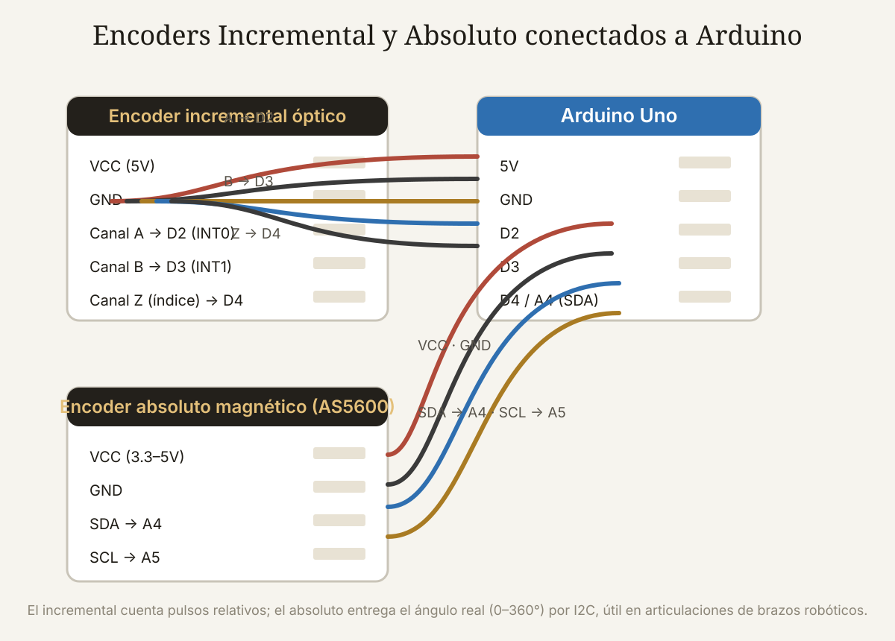

Qué cubre esta guía
- Qué es un encoder rotativo
- Encoder incremental: canales A, B y Z
- Encoder absoluto: código Gray y resolución
- Comparativa técnica y de precios
- Criterios de selección por aplicación
- Interfaces con Arduino: interrupciones y I2C
- Encoders magnéticos: el AS5600
- Decisiones prácticas
- Conclusión
- Preguntas frecuentes
Qué es un encoder rotativo
Un encoder rotativo es un sensor que convierte el giro de un eje en una señal eléctrica que un controlador puede interpretar como posición angular, velocidad o sentido de rotación. Es el instrumento de retroalimentación estándar en motores, brazos robóticos, CNC, impresoras 3D, paneles de control y automatización industrial.
Existen dos familias según el principio físico:
- Ópticos: un disco con ranuras interrumpe un haz de luz entre un LED y un fotodetector; cada interrupción genera un pulso. Alta resolución y precisión, sensibles a polvo y suciedad.
- Magnéticos: un imán en el eje gira frente a sensores Hall; el ángulo se calcula por la orientación del campo. Más robustos a la suciedad y más baratos, con resolución generalmente menor (aunque los modernos llegan a 14–16 bits).
Pero la clasificación que define la arquitectura de tu sistema no es el principio físico: es si el encoder entrega posición relativa o absoluta.
Encoder incremental: canales A, B y Z
Un encoder incremental genera pulsos proporcionales al giro, pero no sabe dónde está: solo cuenta cuántos pulsos han pasado desde el punto de partida. Su salida típica tiene tres señales:
- Canal A: una onda cuadrada con N pulsos por revolución (PPR, pulsos por revolución).
- Canal B: la misma onda desfasada 90° eléctricos respecto a A (cuadratura). Comparando el orden de los flancos de A y B, el controlador deduce el sentido de giro.
- Canal Z (índice): un pulso único por revolución que marca un punto de referencia físico, usado para homing.
Con cuadratura, cada revolución produce 4× PPR conteos (detección de ambos flancos de ambos canales), técnica llamada decodificación 4x. Un encoder de 200 PPR puede así reportar 800 conteos por vuelta — suficiente para muchas aplicaciones de hobby.
La característica decisiva: al encender, el controlador no sabe la posición. Si el eje se movió con el sistema apagado, la posición se pierde y hay que re-hacer homing (mover contra un final de carrera o buscar el pulso Z). Es el precio de su simplicidad y su bajo costo.
Encoder absoluto: código Gray y resolución
Un encoder absoluto entrega la posición real del eje en todo momento, incluso recién encendido. Su disco tiene pistas concéntricas con un código binario (normalmente código Gray): cada ángulo del disco produce un patrón único de bits. Por ejemplo, un encoder absoluto de 12 bits divide la vuelta en 4.096 posiciones, cada una con su código irrepetible.
Por qué se usa código Gray en lugar de binario puro: entre posiciones consecutivas cambia un solo bit, de modo que un error de lectura entre dos pistas nunca produce una posición disparatada. Es la diferencia entre leer "181°" en lugar de "189°" por un error de alineación.
Dos subfamilias:
- De una vuelta (single-turn): reporta el ángulo dentro de una revolución (0–360°). Suficiente para articulaciones de robots, antenas y paneles.
- Multivuelta (multi-turn): además del ángulo, cuenta las revoluciones completas, típicamente con un engranaje interno o una pila de respaldo. Necesario en husillos, grúas y mecanismos que giran muchas vueltas y deben recordar la posición absoluta.
Las interfaces comunes son SSI (serial síncrono industrial), RS-485/BiSS/CANopen (industrial), y en el mundo maker I2C o SPI (módulos magnéticos). Los absolutos industriales de 13–17 bits cuestan desde decenas a cientos de dólares; los magnéticos maker (AS5600) rondan los 3–8 USD con 12 bits.
Comparativa técnica y de precios
| Característica | Incremental | Absoluto |
|---|---|---|
| Posición al encender | Desconocida (requiere homing) | Conocida al instante |
| Salida típica | Pulsos A/B/Z (cuadratura) | Código Gray, SSI, I2C/SPI |
| Resolución típica | 100–5.000 PPR (×4 en cuadratura) | 8–17 bits por vuelta |
| Pérdida de posición con cortes de energía | Sí, si el eje se mueve apagado | No (single-turn dentro de su rango) |
| Complejidad de cableado | 3 señales (A, B, Z) + alimentación | Más líneas en paralelo o bus serial |
| Coste maker (módulo) | 1–10 USD | 3–25 USD (magnético), 30–300 USD (industrial) |
| Ruido eléctrico | Pulsos sensibles a ruido; requiere filtrado | Serial/digital: más inmune |
La regla económica de oro: el incremental gana en costo y simplicidad cuando el sistema siempre hace homing al arrancar (impresoras 3D, CNC, brazos con finales de carrera); el absoluto gana cuando el arranque debe ser inmediato y confiable sin rutina de búsqueda (robots colaborativos, ejes de grúa, aplicaciones de seguridad).
Criterios de selección por aplicación
La decisión práctica se resume en cuatro preguntas:
1. ¿El sistema puede hacer homing al encender? Si sí (finales de carrera en cada eje, o un pulso Z alcanzable), el incremental resuelve casi todo con la décima parte del presupuesto. Si el arranque debe ser instantáneo y sin movimientos de búsqueda — como un brazo que debe saber su pose al energizar por seguridad —, el absoluto es obligatorio.
2. ¿Cuánta resolución necesita realmente? Un incremental de 1.000 PPR con decodificación 4x da 4.000 conteos por vuelta (0,09°). Un absoluto de 12 bits da 4.096 posiciones (0,088°). Ambos superan con holgura lo que un motor con reductora entrega en precisión mecánica real. No pagues por 17 bits si tu mecánica tiene juego de 0,5°.
3. ¿Gira muchas vueltas y debe recordar la posición? Un encoder absoluto de una vuelta "se pierde" fuera de 0–360°. Para husillos o ejes rotatorios continuos necesitas absoluto multivuelta (o incremental con homing).
4. ¿El entorno es sucio o vibra? Los ópticos sufren con polvo y grasa; los magnéticos son prácticamente inmunes. En un taller de mecanizado, el magnético incremental o absoluto es la elección natural.
| Aplicación | Recomendación | Por qué |
|---|---|---|
| Impresora 3D / CNC | Incremental + finales de carrera | Homing estándar, costo mínimo |
| Brazo robótico educativo | Absoluto magnético (AS5600) | Pose conocida al encender, I2C simple |
| Motor con control de velocidad | Incremental (óptico o magnético) | Solo necesita velocidad y sentido |
| Panel solar / antena | Absoluto de una vuelta | Debe orientarse sin homing tras apagón |
| Grúa / husillo largo | Absoluto multivuelta | Posición absoluta en muchas vueltas |
| Volante / panel de control | Incremental con pulsador | Economía y sentido intuitivo |
Interfaces con Arduino: interrupciones y I2C
Con un encoder incremental, los canales A y B se conectan a pines con interrupción (en el Uno: D2 y D3) y el conteo se hace en la interrupción, nunca en loop() con digitalRead() — a alta velocidad perderás pulsos:
#include <Encoder.h>
Encoder miEncoder(2, 3); // pines A y B
long posicionAnterior = 0;
void setup() {
Serial.begin(9600);
}
void loop() {
long posicion = miEncoder.read();
if (posicion != posicionAnterior) {
Serial.print("Conteos: ");
Serial.println(posicion);
posicionAnterior = posicion;
}
}La librería Encoder (de Paul Stoffregen) maneja la cuadratura en las interrupciones internas y no se pierde pulsos en velocidades razonables de hobby. Para leer el pulso Z y hacer homing, otro pin digital con attachInterrupt.
Con un encoder absoluto magnético I2C (AS5600), la lectura es una instrucción:
#include <Wire.h>
#define AS5600_ADDR 0x36
#define ANGLE_REG 0x0E
void setup() {
Wire.begin();
Serial.begin(9600);
}
void loop() {
Wire.beginTransmission(AS5600_ADDR);
Wire.write(ANGLE_REG);
Wire.endTransmission(false);
Wire.requestFrom(AS5600_ADDR, 2);
if (Wire.available() == 2) {
int alto = Wire.read();
int bajo = Wire.read();
int angulo12 = (alto << 8) | bajo; // 0 a 4095
float grados = angulo12 * 360.0 / 4096.0;
Serial.println(grados, 2);
}
delay(50);
}La ventaja es enorme: sin interrupciones, sin conteos que perder, y la posición sobrevive a reinicios. La desventaja: la velocidad de lectura la limita el bus I2C (a 400 kHz, ~1–2 kHz de muestreo realista), insuficiente para ejes que giran muy rápido.
Encoders magnéticos: el AS5600
El AS5600 de ams-OSRAM es el encoder magnético absoluto más popular del mundo maker: 12 bits (4.096 posiciones por vuelta), interfaz I2C o PWM, un imán dipolar en el eje y un coste de 3–8 USD. Sus cifras:
- Resolución: 0,088° por paso (4096 pasos/vuelta).
- Rango: 360° — el chip no cuenta vueltas (para eso está el AS5048 con interfaz SPI más rápida, o el AS5601/AS5047 en versiones de mayor velocidad).
- Robustez: inmune a polvo, aceite y luz; ideal para impresoras 3D, brazos y volantes.
- Salidas: I2C (lectura del ángulo), PWM (ancho de pulso proporcional) y una salida de dirección/giro para detección rápida de sentido.
Para articulaciones de brazos robóticos, la combinación motor + reductora + AS5600 en el eje de salida (detrás de la reductora) da una retroalimentación absoluta real de la articulación, mucho mejor que medir el motor directamente — se detalla en la guía de encoders de articulación para brazos robóticos.
Decisiones prácticas
- ¿Cuánto PPR necesito? Para control de posición con reductora 10:1, un encoder de 100–400 PPR en el motor da una resolución de salida más que suficiente; para medición directa del eje, 600–1.000 PPR son el estándar cómodo.
- ¿Filtro las señales? Los pulsos de un encoder incremental en un entorno con motores necesitan filtro RC (por ejemplo, 1 kΩ + 10 nF) o un esquema Schmitt trigger; los pulsos sucios producen conteos fantasma.
- ¿Cuál comprar para empezar? Un encoder incremental óptico de 200–600 PPR para aprender cuadratura e interrupciones, y un AS5600 para aprender posición absoluta. Los dos juntos cuestan menos de 15 USD y cubren todo el espectro educativo.
- ¿Y en un brazo robótico de 6 ejes? La combinación industrial estándar es incremental en el motor (velocidad) + absoluto en la articulación (pose); para proyectos educativos, un absoluto por articulación resuelve la pose al encender sin homing.
Conclusión
La elección entre encoder incremental y absoluto no es una batalla de especificaciones, sino una pregunta de arquitectura: ¿tu sistema puede permitirse una rutina de búsqueda de origen al encender? Si la respuesta es sí, el incremental ofrece la mejor relación precio/rendimiento del mercado. Si la respuesta es no — porque la seguridad, la operación remota o la complejidad lo impiden —, el absoluto es la única respuesta correcta, y los magnéticos modernos lo han puesto al alcance de cualquier proyecto maker.
Para la mayoría de los proyectos caseros, la fórmula ganadora es incremental para medir velocidad en el motor y absoluto en las articulaciones que deben recordar su pose. Con eso cubres precisión, robustez y presupuesto en una sola arquitectura.
Preguntas frecuentes
¿Qué diferencia hay entre encoder incremental y absoluto en la práctica?
La diferencia esencial es si el encoder sabe su posición al encender. El incremental solo cuenta pulsos desde que se energiza: si el eje se movió con el sistema apagado, la posición se pierde y hay que hacer homing (buscar un final de carrera o el pulso de índice). El absoluto reporta la posición real siempre, desde el primer instante de encendido, porque cada ángulo tiene un código único. En la práctica: impresoras y CNC usan incrementales con homing; robots y ejes de seguridad usan absolutos.
¿Qué significa PPR y cuántos necesito?
PPR son los pulsos por revolución del canal A. Con decodificación en cuadratura (4x) el conteo efectivo por vuelta es 4× PPR. Para la mayoría de proyectos con reductora, 100–400 PPR en el motor son suficientes; midiendo el eje de salida directamente, 600–1.000 PPR dan una resolución de 0,09–0,15°, más que suficiente considerando el juego mecánico real. Más PPR no mejora la precisión si la mecánica tiene holguras mayores que la resolución del encoder.
¿Qué es el código Gray y por qué se usa en los encoders absolutos?
El código Gray es una numeración binaria donde entre valores consecutivos cambia un solo bit. Se usa en los discos de encoders absolutos porque elimina el error de lectura en los límites entre posiciones: en binario puro, pasar de 0111 a 1000 cambia los cuatro bits, y si las pistas no están perfectamente alineadas se puede leer 1111 (una posición equivocada por 8 pasos); en Gray, el cambio de un bit solo produce un error de un paso como máximo, que además se detecta fácilmente.
¿Puedo usar un encoder absoluto magnético (AS5600) para medir velocidad?
Sí, derivando el ángulo respecto al tiempo, pero con una limitación: el I2C a 400 kHz permite muestrear a 1–2 kHz, suficiente para medir velocidad de ejes lentos y medianos (hasta unos cientos de RPM), pero no para ejes de alta velocidad, donde perderás pasos de ángulo entre lecturas. Para control de velocidad de motores rápidos, el incremental con interrupciones sigue siendo la opción correcta; el AS5600 brilla en posición absoluta de articulaciones.
¿Cuánto cuesta un encoder y qué debo comprar para empezar?
Un encoder incremental óptico de 200–600 PPR ronda los 2–8 USD en módulos maker; uno industrial con robustez certificada cuesta 30–150 USD. Un módulo absoluto magnético AS5600 cuesta 3–8 USD (12 bits), y versiones industriales absolutas de 13–17 bits van de 50 a 400 USD. Para empezar, compra un incremental económico para aprender cuadratura e interrupciones y un AS5600 para posición absoluta: con menos de 15 USD tienes ambos mundos.
Este artículo es contenido editorial independiente: no contiene ubicaciones patrocinadas ni enlaces de afiliado. Si en futuras actualizaciones se agregan enlaces a proveedores de componentes, serán identificados explícitamente. El código y las conexiones son referenciales y deben adaptarse y probarse con tu propio hardware. Si detectas un error en esta guía, por favor avísanos.
Sigue aprendiendo
Aplica lo aprendido en articulaciones reales con la guía de Encoders de Articulación para Brazos Robóticos, o combínalo con otros sensores en la Guía Esencial de Sensores.
Fuentes primarias y lecturas recomendadas
Referencias oficiales de fabricantes y documentación de librerías. Las resoluciones y precios son orientativos y dependen del modelo y canal de compra.
- ams-OSRAM — Hoja de datos del AS5600
- Paul Stoffregen — Librería Encoder para Arduino/Teensy
- Encoder Products — Artículos técnicos sobre encoders
- Dynapar — Encoders absolutos: guía técnica
- Dynapar — Encoders incrementales: guía técnica
- Wikipedia — Código Gray (definición y aplicaciones)
Enlaces revisados: 15 de agosto de 2026.